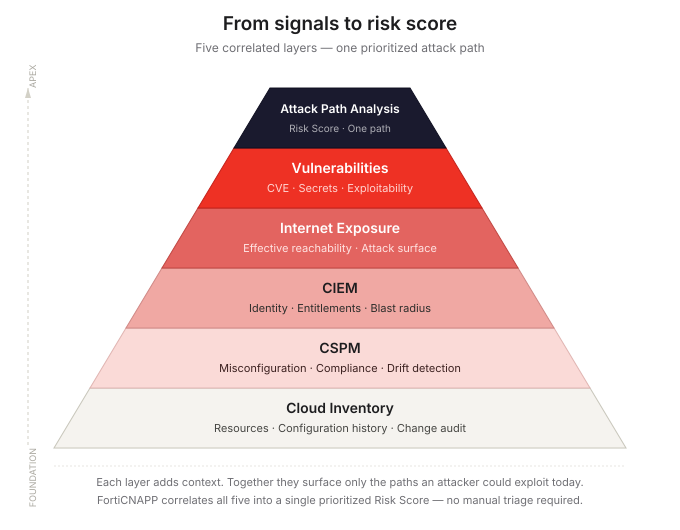
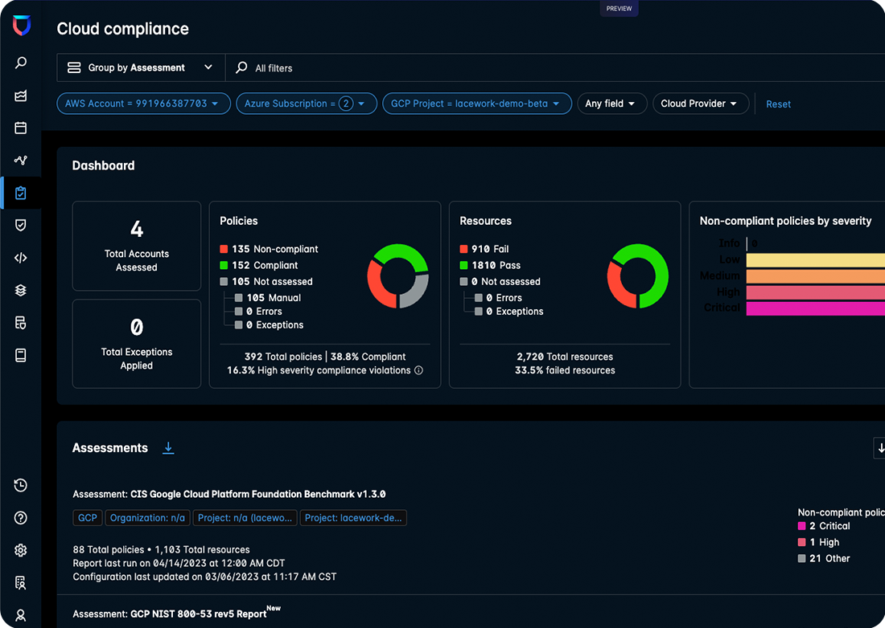
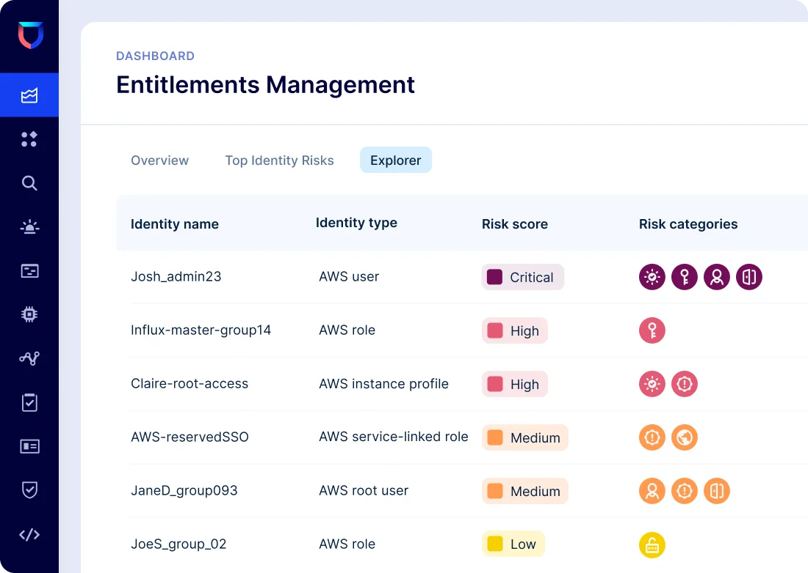
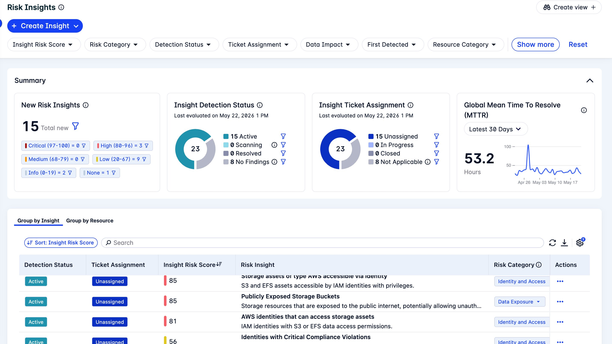
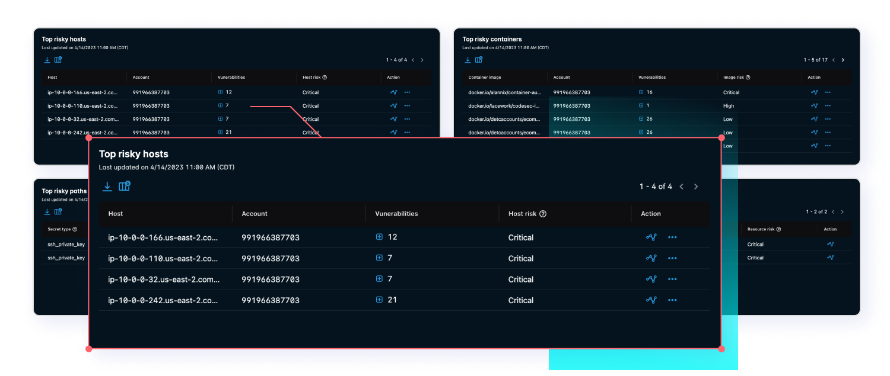
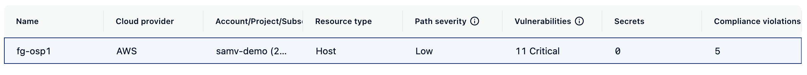
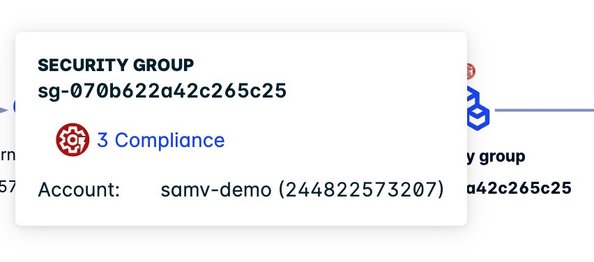
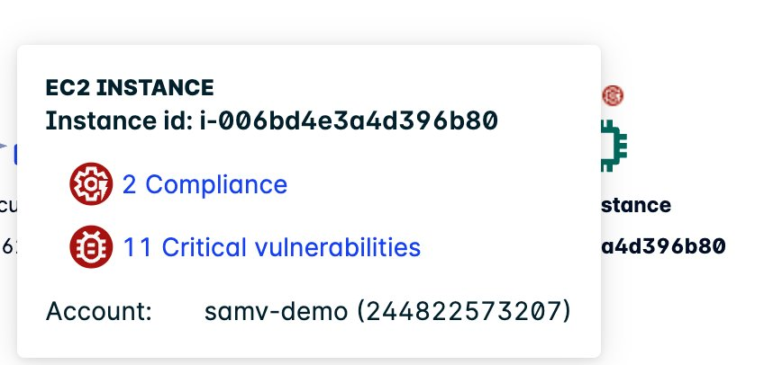

Cloud security posture — a brief level-set
Cloud environments are built to move fast. A developer can provision a new compute instance, an IAM role, or an S3 bucket with a single API call. An autoscaling group can add fifty new nodes overnight. A CI/CD pipeline can push a new container image to production in minutes. That velocity is the business value. It is also the security challenge.
Cloud security posture is the practice of continuously answering three questions about every resource across every cloud account:
On-premises infrastructure changes slowly and sits behind a physical perimeter. Cloud infrastructure changes constantly, is programmable by anyone with the right API credentials, and is reachable from anywhere by default. That is why cloud posture is its own discipline — and why the traditional network-perimeter and vulnerability-scanner model does not translate directly.
Every major cloud provider — AWS, Azure, GCP, OCI — exposes its entire infrastructure as a programmable API. Every configuration decision (who can read this bucket? which ports does this VM expose? which IAM role can assume this service account?) is readable, auditable, and diffable in real time. A CSPM platform connects to those APIs and continuously checks the answers against a policy library. The gap traditional CSPM leaves: it checks configuration, but configuration alone does not tell you risk. Bridging that gap — from raw configuration signals to prioritized, actionable risk — is what the rest of this post is about.
This post is written for cloud security practitioners, SOC analysts, and security architects who want to understand how modern CSPM has evolved beyond configuration checking — and specifically how FortiCNAPP's five-layer correlation engine translates thousands of raw signals into a short, prioritized list of exploitable attack paths. It assumes basic familiarity with cloud concepts (IAM, compute instances, security groups) but no prior exposure to FortiCNAPP or CNAPP tooling. By the end, you should have a clear mental model of the five capabilities that define modern cloud posture management, why they have to work together, and what that looks like inside the actual FortiCNAPP console.
The CSPM problem nobody talks about
If you have run a Cloud Security Posture Management tool for more than a few weeks, you already know the dirty secret: misconfiguration findings alone are not risk. They are signals. And on their own, those signals scale faster than any SOC can triage.
Open a typical multi-cloud CSPM dashboard on a Monday morning and you will see thousands of findings: an S3 bucket without encryption-at-rest, a security group with 0.0.0.0/0 on port 22, an unrotated access key, a storage account allowing public blob access, a Kubernetes namespace without network policies. Each is "true." Few are urgent. Fewer still are exploitable in your environment, right now.
This is the CSPM trap — drowning teams in CIS Benchmark deltas while real attack paths sit hidden in plain sight. The way out is not more rules. It is context. And context, in 2026, means combining five capabilities into a single risk-prioritized view:
- Cloud inventory and configuration tracking — what do you have, how is it configured, and who changed it
- CSPM — the misconfiguration itself, with remediation and drift detection
- CIEM — who or what can actually use that misconfiguration
- Internet exposure analysis — whether an attacker can reach it
- Vulnerability and CVE management — whether the workload behind it is exploitable

This is exactly the architecture Fortinet built into Lacework FortiCNAPP. The official Fortinet documentation describes FortiCNAPP as a platform that "correlates all of this data to show what combinations of risk factors and vulnerable resources could lead to potential attack paths" — by "combining risk factors like vulnerabilities, network reachability, secrets, and identity and access management (IAM) roles". That is the story of this post.
Layer 1 — Cloud inventory and configuration tracking
Before any policy check is meaningful, you need to answer a simpler question: what do I actually have running in my cloud accounts, today? In any large multi-cloud estate, the inventory problem alone is non-trivial. Resources are created and destroyed by Terraform pipelines, by developers in the console, by autoscaling groups, by GitOps controllers, and increasingly by AI agents writing infrastructure.
FortiCNAPP's Resource Inventory is built specifically for this. Per the official documentation, the Resource Inventory "grants you visibility into your multi-cloud environments and their resources and risks" with support for AWS, Azure, Google Cloud, and OCI — letting teams "view, search, sort, and filter among all resources across these environments — with no limit".
What makes this operationally useful is that every resource view rolls up its associated risk. Click a resource and you see "comprehensive details, encompassing the count of vulnerabilities, misconfigurations, alerts, and available attack paths". Inventory becomes the entry point into the rest of the platform — not a static asset list.
Configuration History — the "who, when, what" of every change
FortiCNAPP "takes regular snapshots of your resources, and you can track configuration changes (diffs) through the FortiCNAPP Console". The Configuration History page shows differences between previous and current configurations with side-by-side diff views.
The "who" and "when" attribution comes from FortiCNAPP's deep integration with cloud control plane logs — AWS CloudTrail, Azure Activity Log, Google Cloud Audit Log. When a security group is changed at 3:47 AM on a Tuesday, you can pivot from the misconfiguration finding to the activity log entry that caused it, including the IAM principal, the source IP, and the API call.
- Daily configuration audit — FortiCNAPP "audit[s] your configuration daily and alert[s] you of any concerning changes, ensuring continuous compliance in your multicloud environments"
- Incident-driven inventory search — Paste an instance ID into the FortiCNAPP search field (with wildcard support:
*my_s3*) and immediately pull the full risk profile and change history of the affected resource - Configuration drift tracking — Every resource carries a unique identifier (ARN, full resource name, Azure resource ID) so drift can be tracked even as tags change or resources are recreated
For a SOC, this collapses the typical "five-tool investigation" — inventory tool, CSPM tool, CMDB, CloudTrail console, and IAM console — into a single pivot.
Layer 2 — Misconfiguration detection: the floor, not the ceiling
With inventory and change history in place, traditional CSPM becomes far more meaningful. Now a misconfiguration is not a disconnected finding; it has an owner, a creation timestamp, a change history, and a blast radius.
FortiCNAPP covers the misconfiguration baseline across AWS, Azure, GCP, and OCI from a single agentless onboarding, deploying "in minutes, with or without agents". What you get out of the box:
- Continuous evaluation of resource configuration against hundreds of policies per CSP
- Pre-built compliance frameworks — SOC 2, ISO 27001, HIPAA, HITRUST, PCI, NIST, FISMA, and CIS Benchmarks
- Drift detection — a resource that was compliant yesterday and is not today, tied back to Configuration History
- Multi-cloud unified policy view — the same SOC dashboard for AWS, Azure, GCP and OCI
- Per-finding remediation guidance — what to fix and how to fix it

The Polygraph Data Platform "automatically learns how your environment is supposed to run, and tells you when it deviates" — meaning CSPM in FortiCNAPP is not a static rule engine. It is a behavioral baseline that uses configuration as one input among several.
This is necessary, and it is the foundation. But if you stop here, you are running a 2018-era tool in 2026. A public S3 bucket may hold cat memes or PII; a permissive security group may front a hardened bastion or a vulnerable Jenkins controller. Configuration alone cannot tell you which. That is why the next three layers matter.
Layer 3 — CIEM: the identity dimension misconfiguration cannot see
The single most under-appreciated truth in cloud security: identity is the new perimeter, and identity misuse is the new lateral movement. Verizon's DBIR has shown year after year that credential abuse — not zero-day exploitation — is the dominant initial access vector in cloud breaches.
CSPM tells you a role exists with iam:*. CIEM tells you:
- Which human users and service principals can assume it
- What that role has actually used in the last 90 days (the effective permission set)
- Whether the role chains into other roles via
sts:AssumeRoleor Azure service principal federation - Whether the access keys backing a human identity are leaked, dormant, or rotated
- Whether a GCP service account has the
iam.serviceAccountTokenCreatorrole anywhere it should not
FortiCNAPP "reduces cloud identity risk by knowing your users and their access, pinpointing which are riskiest, and right-sizing their entitlements". Per Fortinet's launch announcement, "each identity is assigned a risk score based on more than 30 factors, helping prioritize high-risk identities."

The pivot point: an s3:GetObject * on a public bucket is one alert. The same bucket reachable by a Lambda whose execution role can also lambda:UpdateFunctionCode on production functions is a privilege-escalation path. CIEM is what turns a list of misconfigurations into a graph of who can do what to whom.
Layer 4 — Internet exposure: from "is it misconfigured?" to "can the internet touch it?"
Most CSPM tools will flag an EC2 instance with a security group allowing 0.0.0.0/0 on port 22. A modern attacker does not care about your security group rule; they care about your effective reachability — the product of:
- Security group / NSG / VPC firewall rules
- Network ACLs, route tables, transit gateways, VWAN hub routing
- Public IP assignment and load balancer listeners
- Application-layer reverse proxies (CloudFront, App Gateway, FrontDoor)
- Kubernetes Service type (
LoadBalancer,NodePort) and Ingress controller exposure - Serverless function URLs and API Gateway resource policies
FortiCNAPP computes the effective network path and visualizes it in the Exposure Polygraph — generated when "critical vulnerabilities are associated with a cloud asset and they are exposed to the internet."
The PreSales value is concrete: exposure analysis cuts the actionable findings list by an order of magnitude. A customer with 4,000 "public" misconfigurations typically has fewer than 200 truly internet-reachable ones. That is a number a SOC can work.
This is also where the Fortinet Security Fabric advantage compounds. Exposure data from FortiCNAPP is enriched by, and can inform, the broader Fabric of FortiGate, FortiWeb, and FortiAnalyzer telemetry. Pure-play CNAPP tools see what the CSP API tells them; the Security Fabric sees what the network actually observed.
Layer 5 — Vulnerability management and the FortiCNAPP Risk Score
A misconfigured, identity-reachable, internet-exposed workload is concerning. The same workload running a vulnerable Log4j version, an OpenSSL with a known RCE, or a container image with a critical kernel CVE is an active incident waiting to happen.
FortiCNAPP performs both agentless and agent-based vulnerability assessment, scanning "workloads for vulnerabilities and secrets without agents, giving instant coverage of production environments — container images, hosts, and language libraries." The code-side coverage adds SCA, SAST, and IaC security, "continuously monitoring runtime application behavior to identify active, exploitable vulnerable packages versus inactive ones with lower risk."
That phrase — active, exploitable versus inactive — is the heart of modern vulnerability management. A Critical CVSS 9.8 on an air-gapped idle workload with no exploitable identity is lower risk than a Medium CVSS 6.5 on an internet-facing API server with a broadly-permissioned IAM role.
The FortiCNAPP Risk Score is not raw CVSS. It is a multi-factor calculation that incorporates severity, exploit-in-the-wild signal, reachability, identity blast radius, data sensitivity, and lateral movement potential. The result: a list ordered by what an attacker would target first in your environment. For a CISO, this is the difference between "we have 12,000 vulnerabilities" and "here are the 17 that matter today."

The keystone: Attack Path Analysis
Attack Path Analysis is FortiCNAPP's risk-side correlation engine — the capability that takes all five layers above and surfaces the real attack chains hidden in the noise.
Per the official documentation, FortiCNAPP "leverages our platform to show possible attack paths within a cloud environment by correlating multiple risk factors — vulnerabilities, network reachability, secrets, and IAM roles — from sources including configuration data, activity data" and more. The Polygraph Data Platform combines "exposure path visualizations with data about what's actively happening in production" so security teams can "easily prioritize the most impactful attack vectors."
Critically, Attack Path Analysis is distinct from FortiCNAPP's Composite Alerts — Composite Alerts is a separate runtime CWPP capability focused on detecting active compromise. Attack Path Analysis sits on the risk side: it predicts where an attacker could go. Both feed the same prioritized SOC workflow, but answer different questions: "what is happening now?" vs. "what is exploitable next?"
The January 2026 platform update introduced Unified Risk Management, consolidating "insights from cloud posture, infrastructure entitlement, vulnerabilities, DSPM, and network security posture into a single view" — distinguishing "theoretical findings from active, exploitable risk."
A worked example. Picture a cloud asset that exhibits all of the following risk factors simultaneously:
| Risk factor | Source | Standalone severity |
|---|---|---|
| EC2 instance launched in non-standard region | Configuration History + CloudTrail | Low |
Instance role with s3:* and secretsmanager:GetSecretValue |
CIEM | Medium |
| Security group with port 4444 open to 0.0.0.0/0 | CSPM | Medium |
| Internet-reachable via misconfigured ALB target group | Exposure Polygraph | High |
| Container image with CVE-2024-XXXXX (RCE, high EPSS) | Agentless vulnerability scan | High |
| Workload reads from S3 bucket containing classified PII | DSPM | High |
A conventional CSPM would generate six separate findings, each routing to a separate ticket, each competing for SOC analyst attention. Most would close as "informational."
FortiCNAPP's Attack Path Analysis collapses these into one prioritized attack path: "Internet-reachable vulnerable workload with over-privileged role and access to sensitive PII — exploit path likelihood high, blast radius critical."
From concept to console
The FortiCNAPP console renders this correlation in three navigation layers — a ranked Attack Path list, the Exposure Polygraph graph, and per-node drill-downs.

The Attack Path list gives every posture analyst a ranked table across the entire estate: identity, cloud, account, resource type, Path severity, vulnerabilities, secrets, and compliance violations — all on a single row.

fg-osp1: 11 Critical vulnerabilities, 0 secrets, 5 compliance violations — yet Path severity is rated Low. The risk score accounts for reachability and blast radius, not just raw CVE count.The Exposure Polygraph renders the actual chain from Internet to the at-risk asset — a literal map of the attack surface for this single workload.

fg-osp1: Internet → Internet gateway → Security group → EC2 Instance. Red badges mark nodes carrying contributing risk findings.Clicking any node in the Polygraph opens a drill-down showing exactly which findings are contributing risk at that node.


Across just these two nodes, FortiCNAPP identified 16 raw findings. A traditional CSPM stack would have routed those as 16 tickets across at least two teams with no inherent linkage. FortiCNAPP collapses them into one Attack Path with a single Path severity rating — "patch the CVE" and "tighten the security group rule" become one coordinated action, not two separate Jira tickets in two separate backlogs.
Continuous CSPM: closing the configuration-to-behavior gap
Continuous CSPM is the final piece. Static posture answers "is this resource configured correctly?" Continuous CSPM answers "is this resource behaving correctly — right now, and continuously?"
- An IAM role used in a way it has never been used before — even if the policy is permissive — is a behavioral anomaly
- An S3 bucket suddenly accessed from a new geographic region or principal
- A Kubernetes pod making API calls to the control plane it never made during baseline learning
- A serverless function whose invocation pattern shifts from synchronous user traffic to background bulk reads
The Polygraph Data Platform "automatically learns how your environment is supposed to run, and tells you when it deviates". Those deviations enrich the Attack Path graph and trigger Composite Alerts when the deviation looks like active compromise. This is the bridge from "CSPM as audit tool" to "CSPM as detection and response telemetry source."
What this means for SOC operations
- Posture team works the Attack Path Analysis queue, not raw misconfiguration lists. Each path is pre-correlated and ranked by the FortiCNAPP Risk Score.
- SOC and incident response works the Composite Alerts queue — the runtime CWPP stream. Attack Path tells them what is exploitable; Composite Alerts tell them what is being exploited.
- Cloud governance uses Resource Inventory and Configuration History as their daily workspace — tracking drift and pivoting from any resource into its full risk profile.
- IAM team consumes CIEM-driven least-privilege recommendations as a continuous feed, not an annual access review.
- Vulnerability management prioritizes by FortiCNAPP Risk Score, not raw CVSS — patching the 50 vulnerabilities that matter rather than the 5,000 that exist.
- SOC integrations — high-fidelity output flows into Sentinel, Splunk, Chronicle, and QRadar via bidirectional integrations with AWS Security Hub, Azure Defender for Cloud, and GCP Security Command Center; FortiSOAR handles automated response playbooks.
- Compliance team keeps CIS / NIST / PCI / SOC 2 dashboards for audit — those are now the floor, not the work.
This is the operating posture that turns CNAPP from a license line item into a measurable reduction in mean-time-to-detect and mean-time-to-remediate for cloud risk.
Business Outcomes
- From thousands of findings to tens of attack paths. Customers routinely report a 90%+ reduction in actionable queue depth once FortiCNAPP's five-layer correlation is running.
- Faster MTTD and MTTR for cloud risk. Correlating posture, identity, exposure, and vulnerability in a single view collapses a multi-tool investigation into a single pivot.
- Continuous least-privilege. CIEM-driven remediation guidance turns the annual access review into an automated, continuous workflow.
- Compliance as the floor, not the work. CIS / NIST / PCI / SOC 2 dashboards stay in place for audit while the SOC works the risk queue above them.
- Single pane across AWS, Azure, GCP, and OCI. One normalized risk view, one SIEM integration, one remediation workflow — no per-CSP tool sprawl.
Discovery Questions
- How many findings does your current CSPM tool generate per week — and how many does your team actually triage to closure?
- When a GuardDuty or Defender for Cloud alert fires, how many tools do you touch before you have a complete picture of the affected resource?
- How do you know which of your open vulnerabilities an attacker would actually reach first?
- Is your IAM access review an annual project or a continuous feed? What triggers a permission right-sizing today?
- When a misconfiguration finding is closed as "informational," how confident are you it truly was?
- What does your team reach for to answer: "What changed in our cloud at 3 AM last Tuesday, and who made the change?"
Closing thought: CSPM is not dead, it has grown up
The CSPM category began as a configuration checker. It has matured into something much more useful: a cloud risk graph anchored in inventory and posture, enriched by identity reachability, network exposure, vulnerability exploitability, and runtime behavior. The vendors who deliver this — and FortiCNAPP is firmly in that group — are no longer selling misconfiguration scanners. They are selling the analyst's first hour of the morning back to them.
If your CSPM still produces a list, and your SOC still works that list, you are leaving most of the value of modern cloud security on the table. The question to ask your team this quarter is not "how many findings did we close?" It is "how many real attack paths did we cut?"
That is the conversation FortiCNAPP is built for.
I'm Sam Vuillaume, Consulting Systems Expert – Cloud and AI Security at Fortinet (CCIE #11828). I work day-to-day with cloud and security teams across AWS, Azure, GCP, and OCI, helping organizations operationalize security across modern application and AI-driven architectures.
My focus is on positioning Fortinet's Security Fabric for the cloud — bringing together FortiCNAPP, FortiWeb / FortiAppSec Cloud, FortiGate VM, and FortiCASB-SSPM into a unified approach for securing cloud-native and AI-enabled workloads.
In practice, this means translating fast-moving architectures — GenAI applications, API-driven microservices, and agent-based systems — into a cohesive DevSecOps security model that spans build-time, runtime, and control plane enforcement.
Beyond the technical world, I'm passionate about cloud security innovation, AI system risk, and making complex architectures operationally real for customers — and when I'm not deep in cloud security design sessions, you'll likely find me out sailing on Lake Ontario.
References — Fortinet sources
FortiCNAPP product and overview
- FortiCNAPP product page
- FortiCNAPP CIEM product page
- FortiCNAPP Ordering Guide (datasheet PDF)
- Fortinet press release — Lacework FortiCNAPP launch
FortiCNAPP documentation library
- FortiCNAPP Document Library
- Resource Inventory
- Attack Path Analysis (product page)
- Attack Path Analysis (documentation)
- Attack Path Risk Calculation
- Exposure Polygraph
- FortiCNAPP Risk Score
- FortiCNAPP CSPM product page
- Composite Alerts Reference